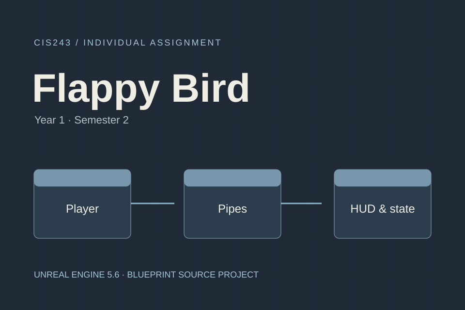

My web coursework, individual and group game projects, and the room that brings them together.
COURSEWORK & PROJECTS
Learning by making.
CIS222 · Web Design and Development — Year 2 · Semester 1 (2026). Tutorials run in order: 2 → 3 → 4 → 5. My CIS243 game projects follow, labelled as individual or group work.
The layout uses table rows, column spans, a banner image and several text styles. The original table-based exercise is kept as part of my learning record.
This exercise combines labelled form controls, selection inputs and CSS focus states. The published demo validates the fields locally and does not send a registration request.
The homepage introduces the sample company and three services. Its registration page includes required inputs, an account selector, a terms checkbox and a reset button. Registration is a local demonstration.
A group 2D runner project made in Unreal Engine. The supplied project includes character, obstacle and collectible Blueprints, with distance, score and a results screen.
Year 1 · Semester 2 · CIS243 — 2D Game Design and Development
The image is an actual screenshot supplied with the project archive. It shows the results screen, remaining game scene and score display.
The original project uses Unreal Engine 5.6 and Paper2D. This entry presents the project as a screenshot showcase; it is not a browser-playable build.

Project cover · source files
INDIVIDUAL PROJECT / CIS243
Flappy Bird
My individual game assignment in Unreal Engine. The source project contains Blueprints for the bird, pipes, player control, HUD and game states, together with a gameplay level.
Year 1 · Semester 2 · CIS243 — 2D Game Design and Development
The download contains the Unreal project, configuration and game assets. Open Flappy_Bird.uproject in Unreal Engine 5.6, then open the blueprints/Level/Level1 level.
The cover illustrates the project structure. A verified gameplay screenshot is not available in this portfolio; the download is source material and does not run directly in the browser.